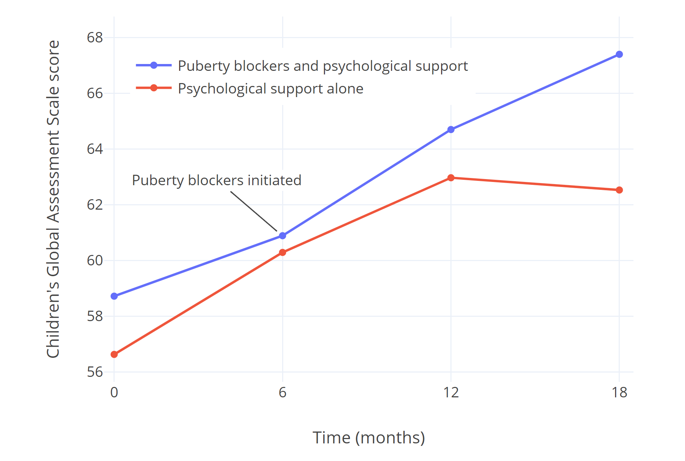
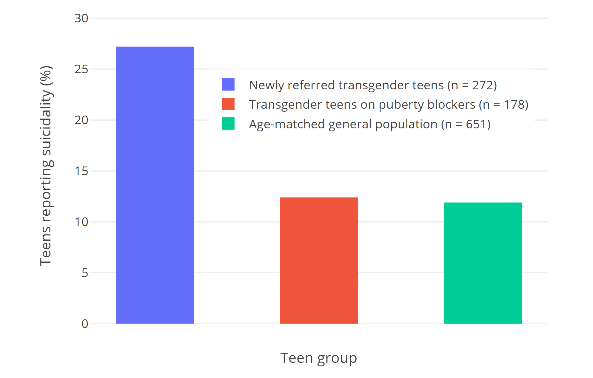
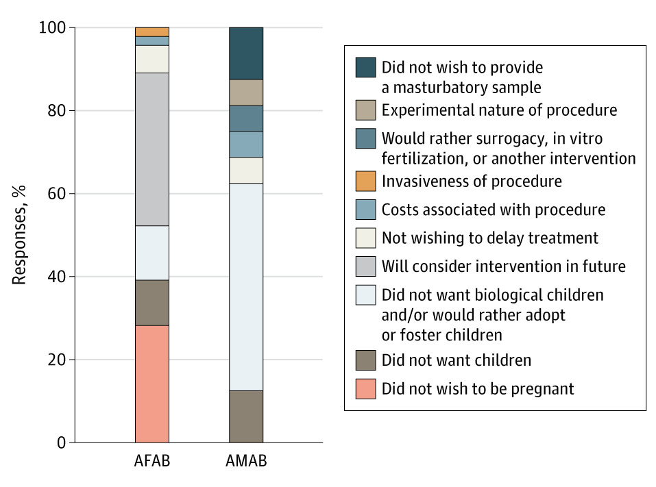

Puberty Blockers: A Review of GnRH Analogues in Transgender Youth
By Mitzi | First published January 30, 2022 | Last modified January 31, 2022
Abstract / TL;DR
Puberty blockers are medications used to pause puberty in both cisgender and transgender youth. For the latter, significant evidence suggests that they improve well-being, psychological functioning, and risk of suicidality, both during puberty and in later life. Their effects are reversible upon discontinuation. Current evidence does not suggest any negative impact on cognitive development, IQ, or fertility. A minor impact on bone density may exist, affecting primarily transgender girls, but little high quality data is available. Based on limited data, prescribers may wish to consider calcium supplementation in transgender teens receiving puberty blockers, and may wish to prefer transdermal delivery over oral estrogens in transgender girls starting hormone therapy in order to optimise bone density outcomes. There is a lack of evidence supporting the common belief that most children grow out of gender dysphoria (“desistance”), as widely cited data describing the rate at which this happens appears highly unreliable. Puberty blockers are difficult to access, and many Western countries have sharply restricted their use recently, in a trend condemned by numerous medical associations. Randomised controlled trials on puberty blockers can likely never be performed, but nonetheless, there is clear evidence they offer significant benefit, and have relatively minor risks.
Introduction
Puberty blockers, also known as gonadotropin-releasing hormone (GnRH) analogues, were introduced for medical use in the 1980s (Swerdloff & Heber, 1983). Originally developed to supersede other therapies in the treatment of prostate cancer, they were soon adapted for paediatric use, revolutionising the treatment of precocious puberty: a rare condition in which puberty begins before the age of 8 (in natal girls) or 9 (in natal boys). Precocious puberty is associated with several negative consequences, such as short stature, teasing, bullying, and worse mental health outcomes. By reversibly pausing puberty for several years in children with this condition, outcomes are often significantly improved, and puberty blockers remain the mainstay treatment for this condition several decades later.
In the 1990s, puberty blockers began to be used in transgender adolescents, as a way of pausing their unwanted puberty, and giving them more time to consider their future (Cohen-Kettenis & van Goozen, 1998). The protocol for this, originally develped by the Dutch VUmc clinic, has sometimes been referred to as the “Dutch Method.” Cohen-Kettenis et al. (2011) published a study following one such Dutch patient 22 years later. Since then, the use of puberty blockers has increased tremendously with the increase in patients seeking transgender healthcare.
Recently, puberty blockers have been the subject of controversy, with legal proceedings seeking to prohibit their use across several countries. Notably, their use was temporarily stopped in the United Kingdom in December 2020 following a ruling in the Bell v. Tavistock case, which was appealed in 2021. Also in 2021, Arkansas became the first U.S. state to make it illegal for doctors to prescribe puberty blockers, with several other states pursuing similar legislation. Critics express concern about the safety of puberty blockers, their reversibility, and effectiveness.
This article seeks to review the literature on the use and safety of puberty blockers in transgender youth, examining their safety, and arguments for and against their use in a comprehensive way. While rarely, alternative medications like the progestin medroxyprogesterone acetate have been used for this, this article mainly focuses on GnRH agonists: by far the most widely used class of medication for puberty blockade, and what’s most commonly colloquially referred to as “puberty blockers.”
Mechanism of Action
GnRH is a naturally occurring hormone in humans responsible for the release of follicle-stimulating hormone (FSH) and luteinizing hormone (LH) from the pituitary gland. Through this mechanism, the body produces its gonadal estrogen and testosterone. GnRH agonists bind to the GnRH receptor and activate it, causing it to be continuously stimulated. This causes an initial increase of LH and FSH, then over the course of several weeks, causes the pituitary gland to become desensitised, pausing the natural sex hormone production for the duration the medication is taken. When the medication is stopped, its effect is reversed, with normal sex hormone production resuming about a week after the medication clears the body (Cedrin-Durnerin et al., 2000).
GnRH agonists are prescribed as an injection administered every one to six months, a surgically implanted pellet once per year, or a nasal spray administered two to three times per day. A short-acting daily injection exists, but is not used for puberty blockade in clinical practise. Common examples of GnRH agonists include leuprorelin (Lupron; Eligard), triptorelin (Decapeptyl), goserelin (Zoladex), histrelin (Supprelin LA), nafarelin (Synarel) and buserelin (Suprefact).
Like GnRH agonists, GnRH antagonists bind to the GnRH receptor, however, they do not stimulate it. Instead, they compete with the body’s own GnRH, rendering it ineffective. As a result, they achieve similar effects without causing an initial increase in hormone levels. Also unlike GnRH agonists, oral formulations of GnRH antagonists exist, allowing some of them to be taken as a daily pill. Common examples include elagolix (Orilissa), degarelix (Firmagon), cetrorelix (Cetrotide), ganirelix (Orgalutran; Antagon) and relugolix (Orgovyx; Relumina). Unfortunately, being much newer drugs, GnRH antagonists are not normally used as puberty blockers at the moment.
In gender dysphoric youth, GnRH agonists are prescribed after the onset of puberty. GnRH agonists are not prescribed to children who have not yet started puberty, but may be started at any point during puberty to pause further changes (Hembree et al., 2017).
Quality of Evidence
In medicine, the gold standard for evidence is the randomised controlled trial, or RCT. In a nutshell, participants are randomly assigned into two or more treatment groups (arms), such that the only difference between arms is the treatment they receive. Commonly, one group receives a placebo, while another receives the treatment being studied. The ideal RCT is blinded, meaning neither participants nor investigators of the study know which group is receiving which treatment. No such trials have been performed with puberty blockers, giving rise to concerns that there could be insufficient evidence available for their use.
Unfortunately, RCTs may not be practically possible for puberty blockers, and are unlikely to ever be performed. A good summary of the reasons for this is provided by Giordano & Holm (2020):
There are two main practical problems that preclude conducting a RCT.
First, patients who approach clinics for help because of distress caused by the first signs of puberty will be unlikely to accept to be a part of a RCT. Medications are needed within a relatively short period of time, at pain of treatment being less effective or ineffective. Recruitment would thus be hard if not impossible.
Second, the ideal RCT is either double blind, i.e. neither researchers nor participants know who gets the active drug, or it assesses outcomes using blinded observers when treatment allocation cannot be hidden from participants. Blinding is necessary in order to reduce bias in outcome assessments. But, a RCT of puberty delay could not maintain blinding. Because GnRHa are effective in delaying puberty it would soon become evident to participants, researchers and outcome assessors who was in the active treatment arm and who was not. This breakdown of blinding would mean that there would be potential bias in the outcome assessments, both in relation to biological and psychological outcomes. It would also mean that participants allocated to the non-treatment arm of the study would be likely to either withdraw from the study at a much higher rate than in the treatment arm introducing potential bias, and/or be more likely not to adhere to the trial but seek puberty delaying treatment outside of the trial thereby adding a confounder.
Mul et al. (2001) ran into this problem conducting a similar study on teens with precocious puberty:
In the original study design a third arm with untreated children was scheduled as a control group. It was decided to omit this control group from the study design after it appeared that the parents of all patients who were randomized in the untreated control group refused further participation in the study as GnRHa treatment could be obtained elsewhere.
Besides practical limitations, such RCTs are likely to be unethical. Evidence suggests withholding puberty blockers may cause lasting harm in itself. To knowingly cause such harm to the control group of an RCT is likely to be morally unacceptable, and such an RCT would be unlikely to receive approval from an ethical review board.
This is not to say that studies evaluating such outcomes don’t exist at all: for example, while not randomised or blinded, Costa et al. (2015) compares 101 patients receiving psychological support and puberty blockers to 100 patients receiving psychological support alone. The results of this study are further outlined below.
As a result of these limitations, this article mainly cites cohort studies, making the argument that sufficient other high-quality studies exist to reach well-supported conclusions: a practise sometimes required in other areas of medicine as well. Because this is the only way we can practically evaluate puberty blockers and RCTs are likely impossible, it seems disingenuous to make the claim that lack of RCTs equate to lack of evidence around puberty blockers, as this standard of evidence can never be met, and the claim ignores a substantial existing body of literature.
Suicidality and Well-being
A significant body of evidence associates the use of puberty blockers in those who want such treatment with improved psychological well-being: the primary argument for their use.
While different studies use different methodologies, three standardised psychological questionnaires are typically used to evaluate well-being: the Children’s Global Assessment Scale (CGAS), the Child Behavior Checklist (CBCL), and the Youth Self-Report (YSR). All three are aimed at evaluating psychological functioning and problematic behaviour: typically, the CGAS is administered by a clinician, the CBCL is filled out by a parent or guardian, and the YSR is filled out by a child themselves. It’s important to note that scores in these assessments are known to markedly worsen in adolescence in general, with the onset of psychological difficulties and self-harm often appearing during puberty (Verhuist et al., 2003; Nock et al., 2013; Morey et al., 2017; Jung et al., 2018).
One of the largest studies to investigate well-being to date has been Turban et al. (2020). It surveyed 20,619 American transgender adults. 3,494 (16.9%) reported that they ever wanted to receive puberty blockers. Of those, only 89 received them. In total, 75.3% of those who received puberty blockers reported ever experiencing suicidal thoughts, compared to 90.2% of those who did not. After controlling for demographic variables like income, family support, and education level, puberty blockers remained significantly associated with decreased odds of lifetime suicidal ideation.
A similarly large survey by Green et al. (2021) included 11,914 Americans aged 13–24 who identified as transgender or nonbinary. The study compares those who received hormone therapy or puberty blockers to those who wished to receive them, but didn’t. It finds that in those who received treatment, rates of depression, suicidal ideation, and suicide attempts were significantly lower. This remained true of those aged 13–17, who were significantly more likely to receive puberty blockers specifically.
Costa et al. (2015) studied 201 gender dysphoric adolescents who presented at the British Tavistock and Portman NHS Gender Identity Development Service. Of them, half were considered eligible for puberty blockers immediately, receiving them in addition to psychological support. The other half were not considered immediately eligible for puberty blockers, citing reasons such as psychiatric problems or conflicts with parents and siblings. These patients received only psychological support for the following 18 months. All patients’ global psychological functioning was assessed using the CGAS questionnaire. Both groups showed significantly improved psychological functioning with psychological support, but the group receiving only psychological support stalled and showed no further improvement towards the end of the study, while those receiving puberty blockers continued to show greater improvement. The authors point out that the eventual CGAS score of the group receiving puberty blockers coincided almost perfectly with those found in a sample of children/adolescents without observed psychological/psychiatric symptoms.
|  |
|---|
| Figure 1: CGAS scores of psychological functioning in transgender teens receiving puberty blockers and psychological support, compared to those receiving psychological support alone in Costa et al. (2015). |
A later study at the same British gender identity clinic, Carmichael et al. (2021), received widespread media coverage in the United Kingdom following its mixed findings. It followed 44 gender dysphoric adolescents who received puberty blockers. CGAS scores were higher than the 2015 study at baseline, and showed slower and more modest improvement. The study reached contradictory conclusions, with improvements reported in some questionnaires, but not others, even for comparable measurements. Interestingly, in some of the researchers’ measures of well-being, social acceptance, and self-perception, adolescents themselves reported significant improvements, while their parents reported almost no improvement. The study characterises participants’ overall experiences with puberty blockers as positive, but is difficult to draw any conclusions from.
De Vries et al. (2011) and de Vries et al. (2014) investigate the psychological outcomes of the same cohort of transgender adolescents receiving puberty blockers at the VUmc gender clinic in the Netherlands. Both investigate psychological outcomes in a range of tests, with the 2014 study providing long-term follow-up many years after puberty blockers, and after gender reassignment surgery. In the studied cohort, psychological functioning improves and depression decreases over time, as evidenced by standardised tests, including CGAS scores. Significant improvements in well-being are reported both during treatment with puberty blockers, and in the years after, with hormone therapy and surgery. Unlike Carmichael et al., CBCL and YSR scores improve.
Van der Miesen et al. (2020) charts psychological well-being across 3 groups of Dutch adolescents: 272 transgender adolescents who haven’t yet received puberty blockers, 178 adolescents receiving puberty blockers, and 651 cisgender adolescents from the general population. The study finds poorer psychological functioning in those before treatment, while psychological functioning and well-being is similar to cisgender adolescents in those receiving pubertal suppression. These findings are in line with Costa et al. (2015), which noted that those receiving puberty blockers reached CGAS scores comparable to the general (age-matched) population.
|  |
|---|
| Figure 2: Percentages of teens who report suicidality in van der Miesen et al. (2020). Suicidality was defined as endorsing the statement “I deliberately try to hurt or kill myself” or “I think about killing myself.” Suicidality among Dutch transgender youth has not significantly changed over time, making cohort differences unlikely (Arnoldussen et al., 2020). |
In addition to the studies listed above, several smaller, less focused studies have also assessed the well-being of transgender adolescents receiving puberty blockers and reported overall positive experiences (Khatchadourian et al., 2014; Achille et al., 2020; Kuper et al., 2020). No studies report a decline in psychological functioning or notably negative psychological outcomes with the use of puberty blockers.
In combination, this strongly suggests that puberty blockers improve well-being and psychological functioning in children who experience gender dysphoria. In addition, it suggests that inappropriately withholding them may lead to worse later-life outcomes, such as increased suicidality.
Counterintuitively, several of the studies listed do note that puberty blockers don’t reduce gender dysphoria (de Vries et al., 2011; Carmichael et al., 2021). It’s important to be aware that this finding refers to the wish to transition, rather than psychological well-being. The finding is based on the Utrecht Gender Dysphoria Scale questionnaire (de Vries et al., 2006). To illustrate, the version for transmasculine youth asks patients whether they endorse such statements as “I prefer to behave like a boy”, “I wish I had been born as a boy”, “I hate having breasts”, and “every time someone treats me like a girl, I feel hurt.”
When studies note that puberty blockers don’t reduce gender dysphoria, this means children don’t stop identifying as transgender after receiving puberty blockers. They continue to want to transition. De Vries et al. (2011) points out this is the expected outcome:
As expected, puberty suppression did not result in an amelioration of gender dysphoria. Previous studies have shown that only gender reassignment consisting of cross-sex hormone treatment and surgery may end the actual gender dysphoria. None of the gender dysphoric adolescents in this study renounced their wish for gender reassignment during puberty suppression. This finding supports earlier studies showing that young adolescents who had been carefully diagnosed show persisting gender dysphoria into late adolescence or young adulthood
Fertility
Unlike hormone therapy, no risk of permanent infertility is believed to exist with the use of puberty blockers. Several long-term follow-up studies of patients treated with puberty blockers have found normal fertility. Among others, Feuillan et al. (1999), Heger et al. (1999), Heger et al. (2006) and Lazar et al. (2014) find no indication of impaired fertility in patients treated with puberty blockers for precocious puberty. In the years and decades following their treatments, the several hundred patients in these studies are found to conceive normally without an increased need for assisted reproductive technology, and with uneventful pregnancies. Despite several decades of use, no reports exist in literature of permanent infertility linked to puberty blockers. Interestingly, transgender populations do have higher rates of sperm abnormalities than cisgender populations, before any medical treatment has taken place (Li et al., 2018; Rodriguez-Wallberg et al., 2021).
In contrast, hormone therapy may cause permanent infertility (Hembree et al., 2017; Cheng et al., 2019). If fertility preservation has not been accessed before beginning treatment, puberty blockers must be stopped to do so, ideally before hormone therapy begins. When puberty blockers are stopped, unwanted sex characteristics continue to develop. Transgender people may find this extremely distressing, which may be one reason for them to not pursue fertility preservation.
No data exists on the exact length of time for which puberty blockers need to be stopped before full fertility is restored, and it likely varies depending on the age puberty blockers were initiated. Bertelloni et al. (2000) found spermarche took place between 0.7 to 3 years after discontinuation of puberty blockers in boys treated for precocious puberty. Barnard et al. (2019) report on the case of a single transgender patient who had been receiving puberty blockers for 6 months, from the age of 17. Three months after the last dose of monthly leuprorelin, no viable sperm sample could be produced. Five months after, their sample was viable.
Regardless of this, transgender individuals are extremely unlikely to use fertility preservation, with some estimates suggesting utilisation rates below 5% in North America (Chen et al., 2017; Nahata et al., 2017). In one piece of research, Pang et al. (2020) questioned 102 transgender Australian teens on their reasons for declining fertility preservation. The following statistics were gathered:
|  |
|---|
| Figure 3: Australian transgender teens’ reasons for declining fertility preservation in Pang et al. (2020). |
As such, there is no evidence-based reason to believe puberty blockers could cause infertility, with fertility returning when they are discontinued. However, due to low discontinuation rates for puberty blockers and low fertility preservation rates, those who start puberty blockers and persist are unlikely to have biological children. Clinical guidelines recommend that adolescents seeking puberty blockers should be counselled on options for fertility preservation, and parents should be involved in this (Hembree et al., 2017).
Bone Density
Bone density is a measure of the amount of bone mineral present in bone tissue. Bone density is measured using imaging techniques, such as DEXA scans: a type of X-ray. It is used to predict patients’ risk of breaking bones. The clinical terms for low bone density are osteopenia, and in more severe cases, osteoporosis, which is common among the elderly. For the purposes of this review, the most relevant measurement of bone density is the z-score, which expresses a patient’s bone density in comparison to other people of the same age and sex. A z-score of 0 indicates bone density equal to the general population. Small deviations, such as -0.2, may not always be relevant, but z-scores below -1 may be cause for concern.
There are concerns around the effects of puberty blockers on bone health. Puberty is a critical time for the accrual of bone density: a process largely driven by sex hormones. This process is delayed in those receiving puberty blockers, leading to temporary lower bone density and z-scores compared to peers going through puberty normally. While these short-term z-scores are not particularly relevant, long-term outcomes are very important: the question becomes what z-scores look like in the long term, into adulthood, and whether the use of puberty blockers has any impact on later-life fracture risk. Literature on this is uncertain.
Klink et al. (2015) finds that in both trans girls and trans boys, z-scores are lower both before treatment, and after long-term follow-up. The study suggests a small negative effect on final bone density from the use of puberty blockers, although many measurements fail to reach statistical significance. The study records notably lower final z-scores for trans girls than trans boys.
Vlot et al. (2017) finds that 2 years after beginning hormone therapy, z-scores were returning towards normal. In trans boys, final z-scores were negligibly lower, while in trans girls, the effect was much more pronounced, with meaningfully lower z-scores both before and after treatment.
In line with this, Schagen et al. (2020) finds that in its cohort, final z-scores normalised after 3 years of hormone therapy for trans boys, while they remained meaningfully low both before and after treatment for trans girls.
| Figure 4: Bone Mineral Apparent Density (BMAD) of the lumbar spine across multiple studies, relative to sex assigned at birth. Three measurements are taken in each study: the initiation of puberty blockers, the initiation of hormone therapy, and one measurement after several years of hormone therapy. A z-score below -1 is commonly considered to be clinically relevant osteopenia, while a score below -2.5 is considered to be osteoporosis. The figure illustrates that trans girls tend to have significantly lower bone density before, during, and after treatment, while this is not the case for trans boys. Trans girls also tend to receive puberty blockers for a longer time. |
Guaraldi et al. (2016) find in their literature review that in those receiving puberty blockers for precocious puberty, bone mineral density is lower than that of untreated peers during treatment with puberty blockers, then typically recovers when puberty is initiated, with long-term follow-up showing little difference to the general population. Combined with the results of trans boys, this suggests that not puberty blockers themselves, but rather, subsequent suboptimal hormone therapy in trans girls could potentially be to blame for their more pronounced negative outcomes.
The hormone therapy prescribed to trans girls in the listed studies may be suboptimal in several ways. To begin with, all three use very low adult maintenance dosages of no more than 2 mg oral estradiol in transfeminine patients. Such a dose is likely to produce serum estradiol levels of roughly 50 pg/ml on average: below the average estradiol exposure of cis women (Aly, 2018; Aly, 2020). Many clinical guidelines recommend higher levels, which some research suggests could have a small positive effect on final bone density compared to lower dosages (Roux, 1997; Riggs et al., 2012). Indeed, the authors of all three studies themselves note their doses were low and may have been inadequate for optimal bone density.
Also significantly, all studies use oral estrogens. Oral estrogens significantly reduce IGF-1 levels (Isotton et al., 2012; Southmayd & De Souza, 2017), which is thought to play a vital role in bone density accrual, and strongly correlates with bone density (Barake, Klibanski & Tritos, 2014; Locatelli & Bianchi, 2014; Ekbote et al., 2015; Lindsey & Mohan, 2016; Barake et al., 2018). Some experts have recommended transdermal estrogens over oral estrogens to improve bone density outcomes in girls suffering from Turner syndrome (Davenport, 2010), and tentative evidence appears to support the practise (Zaiem et al., 2017). As such, while not currently discussed in most clinical guidelines, the prevalence of oral estrogens in transgender teens is a concern, and avoiding them in favour of transdermal estrogens could lead to improved final bone density.
As a final confounding factor, none of the studies control for lifestyle factors associated with lower bone density, such as exercise, smoking, vitamin D, and calcium intake. These factors have a significant effect on bone density. Transgender people are more likely to smoke, less likely to exercise, and less likely to consume adequate calcium, both as teens and as adults (Jones et al., 2018; Kidd, Dolezal & Bockting, 2018). This is believed to be the reason transgender people of all ages tend to have lower bone density before any treatment is initiated. Without controlling for these factors, which may distort the available data significantly, it’s difficult to draw confident conclusions from these studies, and a causal link between the use of puberty blockers and lower final bone density remains unproven. If such a link does exist, the effect seems unlikely to be dramatic, and unlikely to outweigh the benefits of puberty blockers.
In a noteworthy study, Antoniazzi et al. (2003) report that in those receiving puberty blockers for precocious puberty, bone mineral density is better preserved through calcium supplementation. Calcium intake is often inadequate in transgender youth (Lee et al., 2020), and therefore warrants further study for improving their bone mineral density. Alongside calcium, lifestyle interventions, the use of transdermal instead of oral estrogens, and the avoidance of subphysiological adult dosages of estradiol could all potentially improve bone-related outcomes over current clinical practise.
IQ and Cognitive Development
One possible concern is the impact of puberty blockers on IQ and cognitive development. Very little research on the subject exists, with commonly cited critical studies investigating sheep rather than humans (Hough et al., 2017), or being case studies of a single patient (Schneider et al., 2017). Only two larger studies investigate this:
Staphorsius et al. (2015), the only study to investigate this in a transgender population, evaluated performance in the standardised Tower of London test, as well as IQ scores. The study found no significant differences in executive functioning between the two groups. IQ was slightly lower in transgender girls receiving puberty suppression than the control group, but the same was not true in a statistically relevant way of transgender boys. Age differences, lifestyle factors, and a very low sample size may all explain these differences.
Wojniusz et al. (2016) assessed 15 girls suffering from precocious puberty and treated with a puberty blocker. The 15 girls were compared with 15 age-matched controls. Both groups showed similar IQ scores.
Neither study has very many participants, records baseline cognitive performance, or controls for confounding factors. As such, very few conclusions can be drawn from them. Decades of clinical experience with the use of puberty blockers in children suggests it’s unlikely any particularly dramatic effect on IQ exists, but without much larger, higher quality studies, no conclusion on this can be reached, and further research is needed.
Desistance
Discontinuation rates for patients on puberty blockers are very low, with fewer than 5% of teens typically stopping them without going on to hormone therapy (Wiepjes et al., 2018; Brik et al., 2020; Kuper et al., 2020). A potential concern is that this could mean puberty blockers put children on an almost guaranteed path towards gender transition, when they might otherwise change their minds.
Surprisingly, while a commonly held belief suggests most gender dysphoric children will grow out of it without treatment at a later age, little convincing evidence supports this claim. While existing studies report desistance rates ranging from 43% (Wallien & Cohen-Kettenis, 2008) to 88% (Drummond et al., 2008), they often contain significant methodological issues.
Historically, in the 20th century, a transgender identity was viewed as a negative outcome: it was something for a patient to be cured of, for example through aversion therapy. Since then, a cultural shift towards transgender people has taken place. Older studies into desistance rates are often reflective of this. As an example, Kosky (1987) describes eight boys who were hospitalised in a psychiatric unit for displaying effeminate behaviour and cross-dressing, where they received intensive treatment aimed at curing them. Today, these behaviours are more accepted, and they are not necessarily viewed as the same thing as a transgender gender identity. Clearly, a study like this cannot be used to estimate the desistance rates of today’s gender dysphoric children.
Other studies describing the 1960s through 1980s are similar (Bakwin, 1968; Lebovitz, 1972; Zuger, 1978; Money & Russo, 1979; Davenport, 1986). Many predate the DSM-III, and thus the existence of formal diagnostic criteria. Few studied self-reported gender identity: instead, they tend to study gender non-conforming behaviour, such as cross-dressing, that doesn’t necessarily constitute a transgender identity. Many of them try to discourage patients as a core part of their treatment, sometimes in ways that are now banned across much of the world as conversion therapy. Combined with a drastically changed society, extrapolating modern transgender desistance rates from these studies is unreasonable.
A small number of more recent studies do exist. The highest desistance rates found in modern literature are approximately 88%, reported by three frequently cited Canadian studies: Drummond et al. (2008), Drummond et al. (2018), and Singh, Bradley & Zucker (2021). Unfortunately, these studies appear to be at a high risk of bias: calling their credibility into question, the clinic in which they took place was closed in 2015, amidst allegations of conversion therapy. An independent review found that it “cannot state that the clinic does not practice reparative approaches.” In the review, many children and their parents report feeling the clinic was invasive and intimidating to them. Some instances include:
Assessments are described as intrusive and even traumatic by some, who described feeling “poked and prodded”. One way mirror and multiple observers create discomfort. Many questions were felt to be irrelevant, unnecessarily intrusive (particularly those regarding sexual fantasies), especially when asked without context, rationale, and what seems to be inadequate or even absent informed consent. Also, it is unclear whether any potential benefit of this line of questioning to the patient was explained. Parents of younger clients report their child appearing to be and later reporting feeling they were very uncomfortable with the way they were asked about their gender variance “as if my child was not okay as a person.” One parent described feeling “dismissed” when she spoke to clinicians about this.
Patients reported feeling intimidated to question Dr. Zucker regarding their concerns and were not offered the opportunity to decline. Multiple informants commented on this.
Chart documentation revealed statements reflecting that the diversity of gender expression and variance are not accepted equally. One example is of a child for whom all gender and body dysphoria had resolved and multiple informants indicated sustained good mood and satisfaction with social and academic functioning. Despite this, the parents of the child were advised at discharge to encourage the child to spend more time with cisgendered boys because he had effeminate speech and mannerisms. These were not goals of the client or family.
This may explain why these studies find a much higher desistance rate than other modern literature, and makes them very unlikely to be representative figures. As an alternative possibility, Steensma & Cohen-Kettenis (2018) suggest that differences in the local social climate regarding gender variance may have also been an important contributing factor.
Steensma et al. (2011) and Steensma et al. (2013) set out to investigate factors that could contribute to the persistence or desistance of gender dysphoria in children. The 2011 study reports a desistance rate of 45%, while the 2013 study reports 73%. The figures have been criticised because all children lost to follow-up are assumed to have desisted, which may or may not have inflated their number. More importantly however, in Steensma & Cohen-Kettenis (2018), the authors themselves argue they’ve been cited out of context, and their figures can’t be used to extrapolate desistance rates:
Unlike what is suggested, we have not studied the gender identities of the children. Instead we have studied the persistence and desistence of children’s distress caused by the gender incongruence they experience to the point that they seek clinical assistance. […] Using the term desistence in this way does not imply anything about the identity of the desisters. The children could still be hesitating, searching, fluctuating, or exploring with regard to their gender experience and expression, and trying to figure out how they wanted to live. Apparently, they no longer desired some form of gender-affirming treatment at that point in their lives.
Again, because of the purpose and the design of this study we did not report prevalence numbers in the sample under study. Furthermore, the sample in the 2013 study did not include children in the younger age spectrum of the referred population to the Amsterdam clinic. Reporting prevalence of persistence and/or desistance in this sample would therefore not be reliable.
The only other modern study into persistence rates has been Wallien & Cohen-Kettenis (2008). The study appears to be of higher quality and provides the most convincing estimate available: a 27% persistence rate and a 43% desistance rate over the course of (on average) 10 years. The remaining 30% of participants were lost to follow-up.
Several further problems cast doubt on the data presented in all of these studies, including Wallien & Cohen-Kettenis (2008). Firstly: children are diagnosed using DSM-III and DSM-IV criteria, which are dated by today’s standards. In these older criteria, gender identity was not a diagnostic requirement: a child could be diagnosed with a gender identity disorder for a range of gender non-conforming behaviours, without themselves identifying as a different gender, or experiencing distress with their gender role or sex characteristics (Temple Newhook et al., 2018).
Strikingly, with the exception of Steensma et al. (2011), all studies include a significant number of children who never actually met then-current DSM diagnostic criteria for Gender Identity Disorder: in the case of Wallien & Cohen-Kettenis (2008), a quarter of all participants. These participants have been assumed to be transgender for the purposes of extrapolating desistance rates, but held a diagnosis of Gender Identity Disorder Not Otherwise Specified: a broad category described by the DSM as representing those who may not necessarily seek medical transition, but may transiently cross-dress, be preoccupied with castration, or be intersex and experience gender dysphoria. These participants’ exact circumstances are not described by the researchers, but both Wallien & Cohen-Kettenis and Steensma et al. report in their studies that all, or nearly all persisters met DSM diagnostic criteria, while only about half of desisters did.
Outside of this, there is a lack of long-term follow-up. A gender dysphoric child might desist in transitioning during their teens, but go on to transition in adulthood, for example because of peer pressure or lack of parental acceptance. Whether this happens at any significant rate has not been studied.
The studies do suggest that for an unknown percentage of children, gender dysphoria will resolve over time, but the high desistance rates often cited as an established fact don’t appear to be supported by evidence. Concerns that puberty blockers cause children to transition when they otherwise would’ve aged out of gender dysphoria appear misplaced: children whose dysphoria persisted were much more likely to have met the diagnostic criteria to receive puberty blockers.
Current literature on this will likely soon be superseded by higher-quality data, with several very large, well-funded studies into gender dysphoric youth now underway the United States (Olson-Kennedy et al., 2019), Australia (Tollit et al., 2019) and the United Kingdom (Kennedy et al., 2019).
Desistance and persistence rates can suggest a binary view, and should be seen in a greater context. Because children’s needs change over time, a hypothetical child might feel uncertain about their gender, possibly even receive puberty blockers, and then later decide they do not wish to transition. In such a case, puberty blockers may have met their needs at the time, and were not automatically harmful or regrettable, particularly due to their reversible nature. Neither being transgender, nor being cisgender should be seen as a negative outcome. In their critical commentary, Temple Newhook et al. (2018) write that it is important to respect children’s wishes and autonomy, and move away from the question of, “How should children’s gender identities develop over time?” toward a more useful question: “How should children best be supported as their gender identity develops?”
Regret
In light of persistence and desistance rates, it makes sense to ask how patients themselves feel about their treatment with puberty blockers, and whether they regret receiving them. Limited research exists on the subject:
A large retrospective review of the medical files of all 6,793 patients treated at the Dutch VUmc clinic between 1972 and 2015 found that 14 patients (0.2%) regretted their treatment in total. This included patients who received puberty suppression, hormone therapy, and/or surgery. Notably, 5 of them regretted their treatment because of a lack of social acceptance (Wiepjes et al., 2018).
De Vries et al. (2014), found none of the 55 transgender patients they followed regretted receiving puberty blockers, hormone therapy, or surgery. Psychological well-being continued to improve in their cohort, both with puberty blockers, hormone therapy, and later gender reassignment surgery.
Vrouenraets et al. (2016) interviewed 13 adolescents who had been seen at a Dutch gender identity clinic, twelve of whom had received puberty blockers. Asked about long-term risks, most responded that they were significantly outweighed by puberty blockers allowing them to live a more happy life. Quotes from the interviewed children in the study include:
The possible long-term consequences are incomparable with the unhappy feeling that you have and will keep having if you don’t receive treatment with puberty suppression. (trans boy; age: 18)
It isn’t a choice, even though a lot of people think that. Well, actually it is a choice: living a happy life or living an unhappy life. (trans girl; age: 14)
They also comment on the increasing attention to transgender people in media, with one child saying:
Thanks to media coverage I learned that gender dysphoria exists; that someone can have these feelings and that you can get treatment for it. Beforehand I thought I was the only one like this. (trans boy; age: 18)
Ease of Access
While large geographic differences exist, on the whole, access to puberty blockers is often difficult.
In the United States, Turban et al. (2020) found that access to puberty blockers was associated with a greater household income, noting that the annual cost of them ranges from $4,000 to $25,000 and insurance coverage was unavailable to many. It also found that transgender teens were less likely to receive puberty blockers if they did not identify as heterosexual or binary. Of those who received puberty blockers, 60% reported traveling <25 miles for gender-affirming care, 29% travelled between 25 and 100 miles, and 11% travelled >100 miles. As of 2021, several states are pursuing regulation banning the use of puberty blockers, with Arkansas having become the first to pass such a law. Several large professional bodies representing thousands of medical experts have condemned this type of regulation (American Academy of Child and Adolescent Psychiatry, 2019; American Medical Association, 2021; Endocrine Society, 2021).
In the United Kingdom, waiting lists as long as 4 years or more exist for initial intake appointments for puberty blockers. Legislative changes in light of Bell v. Tavistock complicated access dramatically: in the nine months between the ruling and its reversal, no under-17s received puberty blockers under the public healthcare sytem, and reports described the care of adolescents over 16, who were not affected by the judgement, being discontinued as well. Restrictions in light of Bell v. Tavistock were condemned by WPATH, EPATH, USPATH, AsiaPATH, CPATH, AusPATH, and PATHA, the leading medical associations for transgender health, who released a statement saying they believe it will cause significant harm to the affected patients (WPATH, 2020), as well as Amnesty International UK and Liberty (Amnesty International UK, 2020).
In Sweden, the Astrid Lindgren Children’s Hospital, a part of the Karolinska University Hospital, has recently stopped prescribing puberty blockers, citing the Bell v. Tavistock case as their motivation.
In Finland, new prescriber guidelines for treating gender dysphoric teens were released in 2020 (Society for Evidence Based Medicine, 2021). They broke with WPATH guidelines, instead recommending that gender dysphoric teens receive psychosocial support and psychotherapy as a first-line treatment, and discouraging the use of puberty blockers, with the addition of much stricter criteria for their use. The Finnish health authority has stated that these recommendations will not be revised until further research is available.
A similar trend of increasing wait times and difficult access holds in many other countries, with the process to receive puberty blockers sometimes taking up to several years. Because of their time-sensitive nature in preventing unwanted permanent changes, long-term outcomes are likely to be worse with slower treatment. Some evidence supports this: for example, one study found that reducing treatment wait times led to reduced depression and anxiety compared to historical controls (Dahlgren Allen et al., 2021).
Conclusion
Unknowns exist around puberty blockers in transgender youth, but their risks seem to be relatively minor based on available research, while clear evidence associates their use with improved well-being, psychological functioning, and reduced suicidality.
Based on parallels from research in cisgender teens treated for precocious puberty, as well as limited studies and clinical experience with transgender teens, it’s unlikely that puberty suppression has a dramatic negative effect on children’s final bone density, lifetime fracture risk, IQ, or cognitive development when prescribed in line with medical guidelines. However, there is insufficient evidence to determine whether or not they have any impact at all.
Although not supported by conclusive evidence, the use of puberty blockers may have a modest negative impact on bone density. This could be related to the use of puberty blockers themselves, but could also be related to suboptimal hormone therapy regimens after their use, particularly in transgender girls, as well as lifestyle factors. Studies investigating this suffer from significant methodological issues, and a definitive causal link remains unproven. Based on limited evidence, prescribers may wish to consider calcium supplementation in transgender teens receiving puberty blockers, and may wish to avoid oral estrogens in transgender girls beginning hormone therapy.
Compared to their cisgender peers, transgender adolescents who take puberty blockers are less likely to choose to have biological children, but puberty blockers do not permanently affect fertility.
Widely cited statistics around children growing out of gender dysphoria (“desistance”) as they grow older are based on highly unreliable data. Surprisingly, based on current evidence, we cannot reasonably guess the rate at which this happens. Regardless, desistance rates are not an argument for or against the use of puberty blockers. It is important to respect children’s wishes and autonomy, and to find the best way to support them as their gender identity develops, without imposing the idea that either a transgender or a cisgender gender identity is a bad outcome.
Very few patients who receive puberty blockers experience regret. In broader context, for the small minority of adult transgender patients who report feeling regret after undergoing hormone therapy or surgery, a common reason for that is a lack of social acceptance.
More high-quality research is urgently needed in this field. In particular, the effects of puberty blockers on IQ and cognitive development, bone outcomes, and desistance remain understudied subjects. Randomised controlled trials on puberty blockers are not available, and likely cannot be performed for both practical and ethical reasons. This should not be seen as a reason to discard all other research on the subject, or to label their use as experimental, as it is a standard of evidence that can never be met.
Puberty blockers are extremely difficult for patients to access in many countries, including the United States, the United Kingdom, and parts of Europe. Several countries have recently banned their use, or further restricted it significantly. This review provides further evidence supporting WPATH, EPATH, USPATH, AsiaPATH, CPATH, AusAPTH, PATHA, the Endocrine Society, the American Academy of Child and Adolescent Psychiatry, and the American Medical Association in condemning recent attempts to bar transgender teens from receiving gender-affirming care, including puberty blockers. To better support gender dysphoric children, barriers of access should instead be reduced where possible.
References
- Achille, C., Taggart, T., Eaton, N. R., Osipoff, J., Tafuri, K., Lane, A., & Wilson, T. A. (2020). Longitudinal impact of gender-affirming endocrine intervention on the mental health and well-being of transgender youths: preliminary results. International Journal of Pediatric Endocrinology, 2020, 8. [DOI:10.1186/s13633-020-00078-2]
- Antoniazzi, F., Zamboni, G., Bertoldo, F., Lauriola, S., Mengarda, F., Pietrobelli, A., & Tatò, L. (2003). Bone mass at final height in precocious puberty after gonadotropin-releasing hormone agonist with and without calcium supplementation. The Journal of Clinical Endocrinology and Metabolism, 88(3), 1096–1101. [DOI:10.1210/jc.2002-021154]
- Arnoldussen, M., Steensma, T. D., Popma, A., van der Miesen, A., Twisk, J., & de Vries, A. (2020). Re-evaluation of the Dutch approach: are recently referred transgender youth different compared to earlier referrals? European Child & Adolescent Psychiatry, 29(6), 803–811. [DOI:10.1007/s00787-019-01394-6]
- Bakwin, H. (1968). Deviant gender-role behavior in children: relation to homosexuality. Pediatrics, 41(3), 620–629. [PubMed] [DOI:10.1542/peds.41.3.620]
- Barake, M., Klibanski, A., & Tritos, N. A. (2014). Effects of recombinant human growth hormone therapy on bone mineral density in adults with growth hormone deficiency: a meta-analysis. The Journal of Clinical Endocrinology and Metabolism, 99(3), 852–860. [DOI:10.1210/jc.2013-3921]
- Barake, M., Arabi, A., Nakhoul, N., El-Hajj Fuleihan, G., El Ghandour, S., Klibanski, A., & Tritos, N. A. (2018). Effects of growth hormone therapy on bone density and fracture risk in age-related osteoporosis in the absence of growth hormone deficiency: a systematic review and meta-analysis. Endocrine, 59(1), 39–49. [DOI:10.1007/s12020-017-1440-0]
- Barnard, E. P., Dhar, C. P., Rothenberg, S. S., Menke, M. N., Witchel, S. F., Montano, G. T., Orwig, K. E., & Valli-Pulaski, H. (2019). Fertility Preservation Outcomes in Adolescent and Young Adult Feminizing Transgender Patients. Pediatrics, 144(3), e20183943. [DOI:10.1542/peds.2018-3943]
- Bertelloni, S., Baroncelli, G. I., Ferdeghini, M., Menchini-Fabris, F., & Saggese, G. (2000). Final height, gonadal function and bone mineral density of adolescent males with central precocious puberty after therapy with gonadotropin-releasing hormone analogues. European Journal of Pediatrics, 159(5), 369–374. [DOI:10.1007/s004310051289]
- Brik, T., Vrouenraets, L., de Vries, M. C., & Hannema, S. E. (2020). Trajectories of Adolescents Treated with Gonadotropin-Releasing Hormone Analogues for Gender Dysphoria. Archives of Sexual Behavior, 49(7), 2611–2618. [DOI:10.1007/s10508-020-01660-8]
- Carmichael, P., Butler, G., Masic, U., Cole, T. J., De Stavola, B. L., Davidson, S., Skageberg, E. M., Khadr, S., & Viner, R. M. (2021). Short-term outcomes of pubertal suppression in a selected cohort of 12 to 15 year old young people with persistent gender dysphoria in the UK. PloS One, 16(2), e0243894. [DOI:10.1371/journal.pone.0243894]
- Cedrin-Durnerin, I., Bidart, J. M., Robert, P., Wolf, J. P., Uzan, M., & Hugues, J. N. (2000). Consequences on gonadotrophin secretion of an early discontinuation of gonadotrophin-releasing hormone agonist administration in short-term protocol for in-vitro fertilization. Human Reproduction, 15(5), 1009–1014. [DOI:10.1093/humrep/15.5.1009]
- Chen, D., Simons, L., Johnson, E. K., Lockart, B. A., & Finlayson, C. (2017). Fertility Preservation for Transgender Adolescents. The Journal of Adolescent Health, 61(1), 120–123. [DOI:10.1016/j.jadohealth.2017.01.022]
- Cheng, P. J., Pastuszak, A. W., Myers, J. B., Goodwin, I. A., & Hotaling, J. M. (2019). Fertility concerns of the transgender patient. Translational Andrology and Urology, 8(3), 209–218. [DOI:10.21037/tau.2019.05.09]
- Cohen-Kettenis, P. T., & van Goozen, S. H. (1998). Pubertal delay as an aid in diagnosis and treatment of a transsexual adolescent. European Child & Adolescent Psychiatry, 7(4), 246–248. [DOI:10.1007/s007870050073]
- Cohen-Kettenis, P. T., Schagen, S. E., Steensma, T. D., de Vries, A. L., & Delemarre-van de Waal, H. A. (2011). Puberty suppression in a gender-dysphoric adolescent: a 22-year follow-up. Archives of Sexual Behavior, 40(4), 843–847. [DOI:10.1007/s10508-011-9758-9]
- Costa, R., Dunsford, M., Skagerberg, E., Holt, V., Carmichael, P., & Colizzi, M. (2015). Psychological Support, Puberty Suppression, and Psychosocial Functioning in Adolescents with Gender Dysphoria. The Journal of Sexual Medicine, 12(11), 2206–2214. [DOI:10.1111/jsm.13034]
- Dahlgren Allen, S., Tollit, M. A., McDougall, R., Eade, D., Hoq, M., & Pang, K. C. (2021). A Waitlist Intervention for Transgender Young People and Psychosocial Outcomes. Pediatrics, 148(2), e2020042762. [DOI:10.1542/peds.2020-042762]
- Davenport, C. W. (1986). A follow-up study of 10 feminine boys. Archives of Sexual Behavior, 15(6), 511–517. [DOI:10.1007/BF01542316]
- Davenport M. L. (2010). Approach to the patient with Turner syndrome. The Journal of Clinical Endocrinology and Metabolism, 95(4), 1487–1495. [DOI:10.1210/jc.2009-0926]
- de Vries, A. L. C., Cohen-Kettenis, P. T., & Delemarre-van de Waal, H. (2006). Clinical Management of Gender Dysphoria in Adolescents. International Journal of Transgenderism, 9(4), 83–94. [DOI:10.1300/J485v09n03_04]
- de Vries, A. L., Steensma, T. D., Doreleijers, T. A., & Cohen-Kettenis, P. T. (2011). Puberty suppression in adolescents with gender identity disorder: a prospective follow-up study. The Journal of Sexual Medicine, 8(8), 2276–2283. [DOI:10.1111/j.1743-6109.2010.01943.x]
- de Vries, A. L., McGuire, J. K., Steensma, T. D., Wagenaar, E. C., Doreleijers, T. A., & Cohen-Kettenis, P. T. (2014). Young adult psychological outcome after puberty suppression and gender reassignment. Pediatrics, 134(4), 696–704. [DOI:10.1542/peds.2013-2958]
- Drummond, K. D., Bradley, S. J., Peterson-Badali, M., & Zucker, K. J. (2008). A follow-up study of girls with gender identity disorder. Developmental Psychology, 44(1), 34–45. [DOI:10.1037/0012-1649.44.1.34]
- Drummond, K. D., Bradley, S. J., Peterson-Badali, M., VanderLaan, D. P., & Zucker, K. J. (2018). Behavior Problems and Psychiatric Diagnoses in Girls with Gender Identity Disorder: A Follow-Up Study. Journal of Sex & Marital Therapy, 44(2), 172–187. [DOI:10.1080/0092623X.2017.1340382]
- Ekbote, V. H., Khadilkar, V. V., Khadilkar, A. V., Mughal, Z., Chiplonkar, S. A., Palande, S. A., Phanse-Gupte, S. S., Patwardhan, V. G., & Shilvant, D. S. (2015). Relationship of insulin-like growth factor 1 and bone parameters in 7–15 years old apparently, healthy Indian children. Indian Journal of Endocrinology and Metabolism, 19(6), 770–774. [DOI:10.4103/2230-8210.167549]
- Feuillan, P. P., Jones, J. V., Barnes, K., Oerter-Klein, K., & Cutler, G. B., Jr. (1999). Reproductive axis after discontinuation of gonadotropin-releasing hormone analog treatment of girls with precocious puberty: long term follow-up comparing girls with hypothalamic hamartoma to those with idiopathic precocious puberty. The Journal of Clinical Endocrinology and Metabolism, 84(1), 44–49. [DOI:10.1210/jcem.84.1.5409]
- Giordano, S., & Holm, S. (2020). Is puberty delaying treatment ‘experimental treatment’? International Journal of Transgender Health, 21(2), 113–121. [DOI:10.1080/26895269.2020.1747768]
- Green, A. E., DeChants, J. P., Price, M. N., & Davis, C. K. (2022). Association of Gender-Affirming Hormone Therapy With Depression, Thoughts of Suicide, and Attempted Suicide Among Transgender and Nonbinary Youth. Journal of Adolescent Health, 70(4), 643–649. [DOI:10.1016/j.jadohealth.2021.10.036]
- Guaraldi, F., Beccuti, G., Gori, D., & Ghizzoni, L. (2016). MANAGEMENT OF ENDOCRINE DISEASE: Long-term outcomes of the treatment of central precocious puberty. European Journal of Endocrinology, 174(3), R79–R87. [DOI:10.1530/EJE-15-0590]
- Heger, S., Partsch, C. J., & Sippell, W. G. (1999). Long-term outcome after depot gonadotropin-releasing hormone agonist treatment of central precocious puberty: final height, body proportions, body composition, bone mineral density, and reproductive function. The Journal of Clinical Endocrinology and Metabolism, 84(12), 4583–4590. [DOI:10.1210/jcem.84.12.6203]
- Heger, S., Müller, M., Ranke, M., Schwarz, H. P., Waldhauser, F., Partsch, C. J., & Sippell, W. G. (2006). Long-term GnRH agonist treatment for female central precocious puberty does not impair reproductive function. Molecular and Cellular Endocrinology, 254–255, 217–220. [DOI:10.1016/j.mce.2006.04.012]
- Hembree, W. C., Cohen-Kettenis, P. T., Gooren, L., Hannema, S. E., Meyer, W. J., Murad, M. H., Rosenthal, S. M., Safer, J. D., Tangpricha, V., & T’Sjoen, G. G. (2017). Endocrine Treatment of Gender-Dysphoric/Gender-Incongruent Persons: An Endocrine Society Clinical Practice Guideline. The Journal of Clinical Endocrinology and Metabolism, 102(11), 3869–3903. [DOI:10.1210/jc.2017-01658]
- Hough, D., Bellingham, M., Haraldsen, I. R., McLaughlin, M., Robinson, J. E., Solbakk, A. K., & Evans, N. P. (2017). A reduction in long-term spatial memory persists after discontinuation of peripubertal GnRH agonist treatment in sheep. Psychoneuroendocrinology, 77, 1–8. [DOI:10.1016/j.psyneuen.2016.11.029]
- Isotton, A. L., Wender, M. C., Casagrande, A., Rollin, G., & Czepielewski, M. A. (2012). Effects of oral and transdermal estrogen on IGF1, IGFBP3, IGFBP1, serum lipids, and glucose in patients with hypopituitarism during GH treatment: a randomized study. European Journal of Endocrinology, 166(2), 207–213. [DOI:10.1530/EJE-11-0560]
- Jones, B. A., Haycraft, E., Bouman, W. P., & Arcelus, J. (2018). The Levels and Predictors of Physical Activity Engagement Within the Treatment-Seeking Transgender Population: A Matched Control Study. Journal of Physical Activity & Health, 15(2), 99–107. [DOI:10.1123/jpah.2017-0298]
- Jung, K. Y., Kim, T., Hwang, S. Y., Lee, T. R., Yoon, H., Shin, T. G., Sim, M. S., Cha, W. C., & Jeon, H. J. (2018). Deliberate Self-harm among Young People Begins to Increase at the Very Early Age: a Nationwide Study. Journal of Korean Medical Science, 33(30), e191. [DOI:10.3346/jkms.2018.33.e191]
- Kennedy, E., Spinner, L., Lane, C., Stynes, H., Ranieri, V., Carmichael, P., Omar, R., Vickerstaff, V., Hunter, R., Wright, T., Senior, R., Butler, G., Baron-Cohen, S., Young, B., & King, M. (2021). Longitudinal Outcomes of Gender Identity in Children (LOGIC): protocol for a prospective longitudinal cohort study of children referred to the UK gender identity development service. BMJ Open, 11(9), e045628. [DOI:10.1136/bmjopen-2020-045628]
- Khatchadourian, K., Amed, S., & Metzger, D. L. (2014). Clinical management of youth with gender dysphoria in Vancouver. The Journal of Pediatrics, 164(4), 906–911. [DOI:10.1016/j.jpeds.2013.10.068]
- Kidd, J. D., Dolezal, C., & Bockting, W. O. (2018). The Relationship Between Tobacco Use and Legal Document Gender-Marker Change, Hormone Use, and Gender-Affirming Surgery in a United States Sample of Trans-Feminine and Trans-Masculine Individuals: Implications for Cardiovascular Health. LGBT Health, 5(7), 401–411. [DOI:10.1089/lgbt.2018.0103]
- Klink, D., Caris, M., Heijboer, A., van Trotsenburg, M., & Rotteveel, J. (2015). Bone mass in young adulthood following gonadotropin-releasing hormone analog treatment and cross-sex hormone treatment in adolescents with gender dysphoria. The Journal of Clinical Endocrinology and Metabolism, 100(2), E270–E275. [DOI:10.1210/jc.2014-2439]
- Kosky, R. J. (1987). Gender-disordered children: does inpatient treatment help? The Medical Journal of Australia, 146(11), 565–569. [DOI:10.5694/j.1326-5377.1987.tb120415.x]
- Kuper, L. E., Stewart, S., Preston, S., Lau, M., & Lopez, X. (2020). Body Dissatisfaction and Mental Health Outcomes of Youth on Gender-Affirming Hormone Therapy. Pediatrics, 145(4), e20193006. [DOI:10.1542/peds.2019-3006]
- Lazar, L., Meyerovitch, J., de Vries, L., Phillip, M., & Lebenthal, Y. (2014). Treated and untreated women with idiopathic precocious puberty: long-term follow-up and reproductive outcome between the third and fifth decades. Clinical Endocrinology, 80(4), 570–576. [DOI:10.1111/cen.12319]
- Lebovitz, P. S. (1972). Feminine behavior in boys: aspects of its outcome. The American Journal of Psychiatry, 128(10), 1283–1289. [DOI:10.1176/ajp.128.10.1283]
- Lee, J. Y., Finlayson, C., Olson-Kennedy, J., Garofalo, R., Chan, Y. M., Glidden, D. V., & Rosenthal, S. M. (2020). Low Bone Mineral Density in Early Pubertal Transgender/Gender Diverse Youth: Findings From the Trans Youth Care Study. Journal of the Endocrine Society, 4(9), bvaa065. [DOI:10.1210/jendso/bvaa065]
- Li, K., Rodriguez, D., Gabrielsen, J. S., Centola, G. M., & Tanrikut, C. (2018). Sperm cryopreservation of transgender individuals: trends and findings in the past decade. Andrology, 6(6), 860–864. [DOI:10.1111/andr.12527]
- Lindsey, R. C., & Mohan, S. (2016). Skeletal effects of growth hormone and insulin-like growth factor-I therapy. Molecular and Cellular Endocrinology, 432, 44–55. [DOI:10.1016/j.mce.2015.09.017]
- Locatelli, V., & Bianchi, V. E. (2014). Effect of GH/IGF-1 on Bone Metabolism and Osteoporsosis. International Journal of Endocrinology, 2014, 235060. [DOI:10.1155/2014/235060]
- Money, J., & Russo, A. J. (1979). Homosexual outcome of discordant gender identity/role in childhood: Longitudinal follow-up. Journal of Pediatric Psychology, 4(1), 29–41. [DOI:10.1093/jpepsy/4.1.29]
- Morey, Y., Mellon, D., Dailami, N., Verne, J., & Tapp, A. (2017). Adolescent self-harm in the community: an update on prevalence using a self-report survey of adolescents aged 13–18 in England. Journal of Public Health, 39(1), 58–64. [DOI:10.1093/pubmed/fdw010]
- Mul, D., Versluis-den Bieman, H. J., Slijper, F. M., Oostdijk, W., Waelkens, J. J., & Drop, S. L. (2001). Psychological assessments before and after treatment of early puberty in adopted children. Acta Paediatrica, 90(9), 965–971. [DOI:10.1080/080352501316978011]
- Nahata, L., Tishelman, A. C., Caltabellotta, N. M., & Quinn, G. P. (2017). Low Fertility Preservation Utilization Among Transgender Youth. The Journal of Adolescent Health, 61(1), 40–44. [DOI:10.1016/j.jadohealth.2016.12.012]
- Nock, M. K., Green, J. G., Hwang, I., McLaughlin, K. A., Sampson, N. A., Zaslavsky, A. M., & Kessler, R. C. (2013). Prevalence, correlates, and treatment of lifetime suicidal behavior among adolescents: results from the National Comorbidity Survey Replication Adolescent Supplement. JAMA Psychiatry, 70(3), 300–310. [DOI:10.1001/2013.jamapsychiatry.55]
- Olson-Kennedy, J., Chan, Y. M., Garofalo, R., Spack, N., Chen, D., Clark, L., Ehrensaft, D., Hidalgo, M., Tishelman, A., & Rosenthal, S. (2019). Impact of Early Medical Treatment for Transgender Youth: Protocol for the Longitudinal, Observational Trans Youth Care Study. JMIR Research Protocols, 8(7), e14434. [DOI:10.2196/14434]
- Pang, K. C., Peri, A., Chung, H. E., Telfer, M., Elder, C. V., Grover, S., & Jayasinghe, Y. (2020). Rates of Fertility Preservation Use Among Transgender Adolescents. JAMA Pediatrics, 174(9), 890–891. [DOI:10.1001/jamapediatrics.2020.0264]
- Riggs, M. M., Bennetts, M., van der Graaf, P. H., & Martin, S. W. (2012). Integrated pharmacometrics and systems pharmacology model-based analyses to guide GnRH receptor modulator development for management of endometriosis. CPT: Pharmacometrics & Systems Pharmacology, 1(10), e11. [DOI:10.1038/psp.2012.10]
- Rodriguez-Wallberg, K. A., Häljestig, J., Arver, S., Johansson, A., & Lundberg, F. E. (2021). Sperm quality in transgender women before or after gender affirming hormone therapy—A prospective cohort study. Andrology, 9(6), 1773–1780. [DOI:10.1111/andr.12999]
- Roux, C. (1997). Estrogen therapy in postmenopausal osteoporosis. What we know and what we don’t. Revue du Rhumatisme (English Ed.), 64(6), 402–409. [Google Scholar] [PubMed] [PDF]
- Schagen, S., Wouters, F. M., Cohen-Kettenis, P. T., Gooren, L. J., & Hannema, S. E. (2020). Bone Development in Transgender Adolescents Treated With GnRH Analogues and Subsequent Gender-Affirming Hormones. The Journal of Clinical Endocrinology and Metabolism, 105(12), e4252–e4263. [DOI:10.1210/clinem/dgaa604]
- Schneider, M. A., Spritzer, P. M., Soll, B., Fontanari, A., Carneiro, M., Tovar-Moll, F., Costa, A. B., da Silva, D. C., Schwarz, K., Anes, M., Tramontina, S., & Lobato, M. (2017). Brain Maturation, Cognition and Voice Pattern in a Gender Dysphoria Case under Pubertal Suppression. Frontiers in Human Neuroscience, 11, 528. [DOI:10.3389/fnhum.2017.00528]
- Singh, D., Bradley, S. J., & Zucker, K. J. (2021). A Follow-Up Study of Boys With Gender Identity Disorder. Frontiers in Psychiatry, 12, 632784. [DOI:10.3389/fpsyt.2021.632784]
- Southmayd, E. A., & De Souza, M. J. (2017). A summary of the influence of exogenous estrogen administration across the lifespan on the GH/IGF-1 axis and implications for bone health. Growth Hormone & IGF Research, 32, 2–13. [DOI:10.1016/j.ghir.2016.09.001]
- Staphorsius, A. S., Kreukels, B. P., Cohen-Kettenis, P. T., Veltman, D. J., Burke, S. M., Schagen, S. E., Wouters, F. M., Delemarre-van de Waal, H. A., & Bakker, J. (2015). Puberty suppression and executive functioning: An fMRI-study in adolescents with gender dysphoria. Psychoneuroendocrinology, 56, 190–199. [DOI:10.1016/j.psyneuen.2015.03.007]
- Steensma, T. D., Biemond, R., de Boer, F., & Cohen-Kettenis, P. T. (2011). Desisting and persisting gender dysphoria after childhood: a qualitative follow-up study. Clinical Child Psychology and Psychiatry, 16(4), 499–516. [DOI:10.1177/1359104510378303]
- Steensma, T. D., McGuire, J. K., Kreukels, B. P., Beekman, A. J., & Cohen-Kettenis, P. T. (2013). Factors associated with desistence and persistence of childhood gender dysphoria: a quantitative follow-up study. Journal of the American Academy of Child and Adolescent Psychiatry, 52(6), 582–590. [DOI:10.1016/j.jaac.2013.03.016]
- Steensma, T. D., & Cohen-Kettenis, P. T. (2018). A critical commentary on “A critical commentary on follow-up studies and “desistence” theories about transgender and gender non-conforming children”. International Journal of Transgenderism, 19(2), 225–230. [DOI:10.1080/15532739.2018.1468292]
- Swerdloff, R. S., & Heber, D. (1983). Superactive gonadotropin-releasing hormone agonists. Annual Review of Medicine, 34, 491–500. [DOI:10.1146/annurev.me.34.020183.002423]
- Temple Newhook, J., Pyne, J., Winters, K., Feder, S., Holmes, C., Tosh, J., Sinnott, M.-L., Jamieson, A., & Pickett, S. (2018). A critical commentary on follow-up studies and “desistance” theories about transgender and gender-nonconforming children. International Journal of Transgenderism, 19(2), 212–224. [DOI:10.1080/15532739.2018.1456390]
- Tollit, M. A., Pace, C. C., Telfer, M., Hoq, M., Bryson, J., Fulkoski, N., Cooper, C., & Pang, K. C. (2019). What are the health outcomes of trans and gender diverse young people in Australia? Study protocol for the Trans20 longitudinal cohort study. BMJ Open, 9(11), e032151. [DOI:10.1136/bmjopen-2019-032151]
- Turban, J. L., King, D., Carswell, J. M., & Keuroghlian, A. S. (2020). Pubertal Suppression for Transgender Youth and Risk of Suicidal Ideation. Pediatrics, 145(2), e20191725. [DOI:10.1542/peds.2019-1725]
- van der Miesen, A., Steensma, T. D., de Vries, A., Bos, H., & Popma, A. (2020). Psychological Functioning in Transgender Adolescents Before and After Gender-Affirmative Care Compared With Cisgender General Population Peers. The Journal of Adolescent Health, 66(6), 699–704. [DOI:10.1016/j.jadohealth.2019.12.018]
- Verhulst, F. C., Achenbach, T. M., van der Ende, J., Erol, N., Lambert, M. C., Leung, P. W., Silva, M. A., Zilber, N., & Zubrick, S. R. (2003). Comparisons of problems reported by youths from seven countries. The American Journal of Psychiatry, 160(8), 1479–1485. [DOI:10.1176/appi.ajp.160.8.1479]
- Vlot, M. C., Klink, D. T., den Heijer, M., Blankenstein, M. A., Rotteveel, J., & Heijboer, A. C. (2017). Effect of pubertal suppression and cross-sex hormone therapy on bone turnover markers and bone mineral apparent density (BMAD) in transgender adolescents. Bone, 95, 11–19. [DOI:10.1016/j.bone.2016.11.008]
- Vrouenraets, L. J., Fredriks, A. M., Hannema, S. E., Cohen-Kettenis, P. T., & de Vries, M. C. (2016). Perceptions of Sex, Gender, and Puberty Suppression: A Qualitative Analysis of Transgender Youth. Archives of Sexual Behavior, 45(7), 1697–1703. [DOI:10.1007/s10508-016-0764-9]
- Wallien, M. S., & Cohen-Kettenis, P. T. (2008). Psychosexual outcome of gender-dysphoric children. Journal of the American Academy of Child and Adolescent Psychiatry, 47(12), 1413–1423. [DOI:10.1097/CHI.0b013e31818956b9]
- Wiepjes, C. M., Nota, N. M., de Blok, C., Klaver, M., de Vries, A., Wensing-Kruger, S. A., de Jongh, R. T., Bouman, M. B., Steensma, T. D., Cohen-Kettenis, P., Gooren, L., Kreukels, B., & den Heijer, M. (2018). The Amsterdam Cohort of Gender Dysphoria Study (1972–2015): Trends in Prevalence, Treatment, and Regrets. The Journal of Sexual Medicine, 15(4), 582–590. [DOI:10.1016/j.jsxm.2018.01.016]
- Wojniusz, S., Callens, N., Sütterlin, S., Andersson, S., De Schepper, J., Gies, I., Vanbesien, J., De Waele, K., Van Aken, S., Craen, M., Vögele, C., Cools, M., & Haraldsen, I. R. (2016). Cognitive, Emotional, and Psychosocial Functioning of Girls Treated with Pharmacological Puberty Blockage for Idiopathic Central Precocious Puberty. Frontiers in Psychology, 7, 1053. [DOI:10.3389/fpsyg.2016.01053]
- Zaiem, F., Alahdab, F., Al Nofal, A., Murad, M. H., & Javed, A. (2017). Oral Versus Transdermal Estrogen In Turner Syndrome: A Systematic Review And Meta-Analysis. Endocrine Practice, 23(4), 408–421. [DOI:10.4158/ep161622.or]
- Zuger, B. (1978). Effeminate behavior present in boys from childhood: ten additional years of follow-up. Comprehensive Psychiatry, 19(4), 363–369. [DOI:10.1016/0010-440x(78)90019-6]